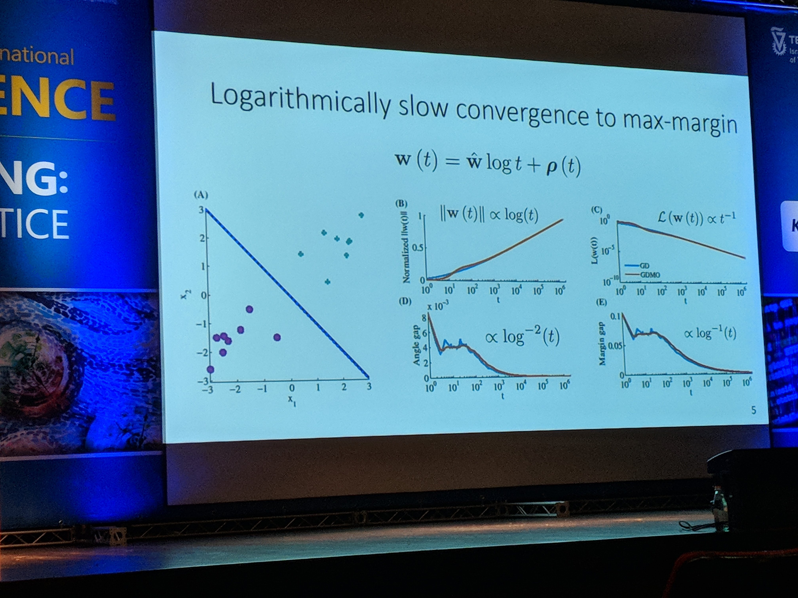
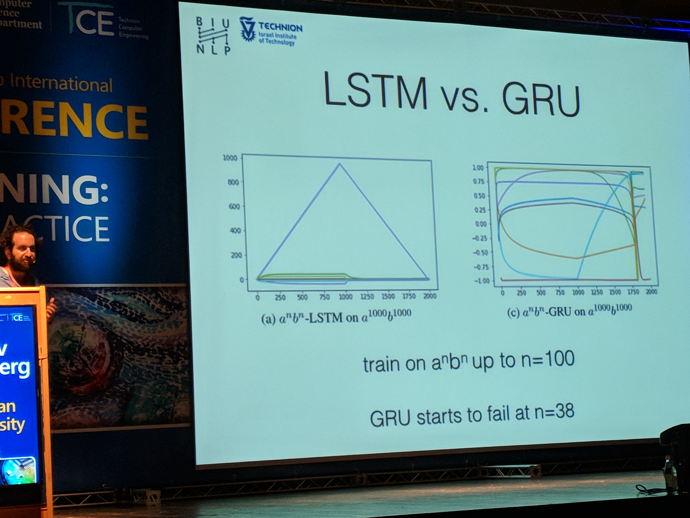
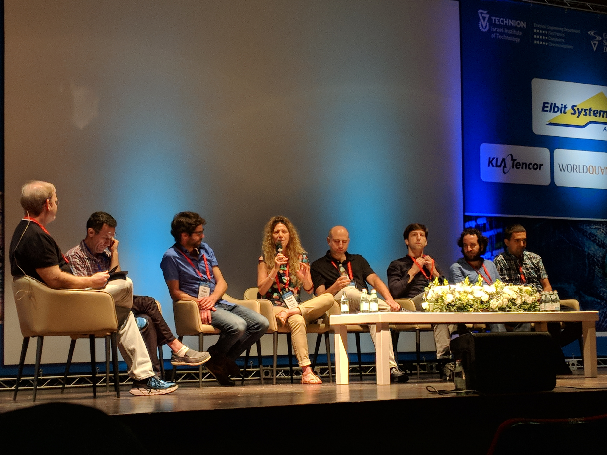

Last week I had the opportunity to attend at the TCE annual conference. It was themed around both theoretical and practical aspects of deep learning. As a deep learning practitioner who enjoys understanding why things work (or don't), I knew I'd find the conference interesting.
I decided to be a good citizen, and share the highlights with you. Please be aware that by highlights I mean the things I subjectively found interesting. This won't be a thorough summary of the conference.
Understanding Optimization and Generalization in Deep Learning
The first talk was given by prof. Nati Srebro from the University of Chicago. One of the challenges he tried to tackle was understanding what causes the network to generalize well, despite the model class having extremely high capacity.
The main takeaway was that the optimization algorithms (SGD, Adam, etc.) introduce an inductive bias. By choosing one of the available algorithms, the training process will be biased towards finding specific type of solutions.
For instance, although Adam trains faster than SGD (training loss is minimized faster), empirical experimentations show that SGD tends to generalize better (test loss is smaller).
He showed another interesting example of a FF network without any activation function. The induced class of models is linear functions: the multiple layers are effectively collapsed into one layer. He showed that when using different connection patterns between the layers, we get solutions of different quality, although the models class remains the same. This is due to the inductive bias we introduce to the training process by specifying the connection patterns.
Eventually, we should keep in mind that deep learning can't just find the optimal solution in terms of generalization magically - even if we have lots of data. This is the reason for using different architectures and different optimization algorithms for different learning problems. Otherwise, using simple FF architectures with simple SGD would do.
Efficient Deep Learning with Humans in the Loop
In the next talk, Zachary Chase Lipton from Carnegie Mellon University discussed a series of works, each aimed at increasing the efficiency of learning from human interactions.
In the RL (Reinforcement Learning) setting, the model is exposed to enormous amount of examples while training. The agent can choose how to explore the state-action space. The goal is to explore what reward the possible actions will yield while exploiting the known good actions.
This tradeoff can be solved using the simple \(\epsilon\)-greedy algorithm: with probability \(1 - \epsilon\) the agent chooses the action which is expected to yield the maximal reward, and with probability \(\epsilon\) a random action is chosen. Usually one anneals down \(\epsilon\) while training.
This algorithm is obviously not the optimal one. For instance, let's say that in the current state the agent has ten actions to choose from, and it knows that action A is the best with probability 0.5, and so is action B. All the other actions are bad with probability 1.0. If it wants to explore, it'd be wiser to randomly choose only between A and B.
This is the motivation behind the Thompson Sampling algorithm. For it to work the model has to estimate uncertainty. One way to do it is to use Bayesian Neural Network. In this model, instead of using numbers for the model's weights, we use distributions. In the forward pass we sample from the weights distribution in order to get a point estimate prediction. In the backward pass we update the parameters of the weights distributions using the reparameterization trick. At test time we do inference by sampling from the weights distributions multiple times, thus getting a distribution over the predictions.
Another interesting topic was how to choose what examples to annotate. One idea was to exploit hierarchies among the labels, and actively select binary questions to ask the annotator. This is similar to the twenty questions game.
The talk ended with an interesting question to keep in mind: datasets tend to have a longer shelf-life than models. When actively annotating the dataset using a specific model, will that dataset be better for a future model compared to a random annotation? The answer is dubious.
Unsupervised internal learning
Prof. Michal Irani from Weizmann Institute of Science talked about using deep learning for super resolution.
She explained about the recurrences inside natural images - both inside the same image and across different scales of that image. This is important for super resolution, since one can downscale a given image, find recurrences across the two images, and then learn how to upscale the original image.
This approach has been done in the past using classical algorithms, and in this talk Michal introduced how to do it using deep learning using only the given image.

In her approach, the image is first downscaled. Then, a CNN model is trained to reconstruct the original image. The same model is then used to upscale the original image.
Michal claims that this internal learning - as opposed to external learning where super resolution is trained using a dataset - can work with a smaller model. This is due to the fact that one image has lower entropy compared to the entire dataset. Consequently, the training process completes under eight seconds, which is impressive.
Transformative Generative Models
Prof. Lior Wolf from Tel-Aviv University and FAIR described generative models in various domains. Specifically he described in depth a model that can transform musical item performed by one instrument to be performed by another.

The idea behind the architecture is to use an autoencoder model for all the instrument types. The encoder component is shared across all the instruments, while the decoder is specific for each one.
At training time, the model gets a different instrument example every time. It uses the unified encoder and the specific decoder of the instrument, and tries to reconstruct the signal.
Since the encoder is shared across the instruments, it must learn to encode information that is agnostic to the actual instrument. Thus, the encoded information will contain only the musical information, e.g. which notes are played, and not how they sound. It's the decoder's job to make them sound like the specific instrument.
Although it sounds good in theory, in practice the encoder learns to allocate different subspaces of the latent space to the different instruments. This is an undesired behavior, because an encoded guitar won't be able to be decoded to a flute, since, the flute's decoder wasn't trained on inputs from this subspace.
To tackle this problem, they introduced a domain confusion loss: if the model is able to distinguish between the instruments using the encoded vector, the loss would be high.
Causal Inference and Deep-Learning: a Two-Way Street
Uri Shalit from Technion University talked about an interesting field not well known to many practitioners - casual inference. One example would be to use a model to predict which medication would be better for a given patient.
We could theoretically train a model using medical records. But what if wealthier patients tend to take more often medication A over B? If we don't measure wealth, any algorithm might be fooled to think A is better than B, even if that's not true. In this case, wealth is called a confounder.
There's no way to know the truth unless we perform RCT (Randomized Controlled Trials). This way, we can randomly assign treatments to patients, thus eliminating the effect of the confounders. Unfortunately, in many real life scenarios performing experiments is costly or impossible to do due to ethical reasons among other reasons.
Uri then introduced TARNet (Treatment-Agnostic Representation Network):

The first key idea of the architecture is that every example was treated either with treatment \(T = 0\) or treatment \(T = 1\). Hence, after transformed into a representation \(\Phi\), one of two paths is chosen based on \(T\), which could be thought of as a switch.
The second key idea is that the distributions of samples of the two treatments differ. Thus, if we want to infer the outcome of giving treatment \(T = 1\) to a patient in the training set that got \(T = 0\) we would be in trouble, since that would be extrapolation.
To tackle this, the model encourages the representation \(\Phi\) to act as if the distributions are the same. In other words, the model has a regularization in a form of penalizing treatment distributional distance in representation space.
At the end of the talk Uri introduced another model - CEVAE (Casual Effect Variational Autoencoders). I really love VAE flavors, which is why I mention it. If you enjoy this kind of models too, I encourage you to read about it.
Theoretical and Empirical Investigation of Several Common Practices in Deep Learning
In the next talk, Daniel Soudry from Technion University mentioned several interesting ideas. First, he explained why sometimes when the model starts to overfit (test loss increases) the actual test accuracy might still be improving.
Take logistic loss for example. After training for \(t\) epochs, the weights vector \(w\) will tend to \(\hat{w} \cdot log(t) + \rho(t)\), where \(\hat{w}\) is the L2 max margin vector and \(\|\rho\| = O(log(log(t)))\). In simpler words, the learned \(w\) will tend towards the vector achieved by SVM - the one that maximizes the margin. The length of the vector will tend to infinity.

Additionally, the test loss increases in the rate of \(\Omega(log(t))\). This is due to the fact that some examples in the test set are misclassified. Since the length of \(w\) tends to infinity, the loss of the misclassified test examples will also tend to infinity. This is true even though the model might increase its test accuracy.
Trying to Understand Recurrent Neural Networks for Language Processing
In the last talk, Yoav Goldberg from Bar-Ilan University tried to shed some light into the different flavors of RNN architectures and what they are capable of.
First, he showed the performance differences between LSTM and CBOW on three simple tasks - sentence length prediction, words containment (is w inside a given sentence), and words order (is w1 before w2 in a given sentence).
For length prediction, LSTM is better. Interestingly, CBOW does a decent job. On first thought, it seems as if maybe some words have predictive power to predict what the sentence's length is: maybe some words tend to be in longer sentences?
But after giving it a second thought, it turns out that the longer a sentence is, the smaller the norm of the words embeddings average gets. This gives the model the capability of predicting the sentence length.
CBOW performed better on the words containment task, but LSTM showed advantage on the words order task.
Interestingly, LSTM doesn't rely on language-naturalness, while skip-thought model does.
Next, Yoav showed that LSTM, as opposed to GRU, can count:

When trained using a hidden state size of 10, we can see that in LSTM one of the dimensions learned to count. This is possible due to the gating nature of the model: one can manually set the values of the weights to enable counting.
Although the counting task is pretty simple, and usually is not what a typical DL application performs, it's interesting to understand some of the limitations of the building blocks we use in our everyday modeling life.
Some final thoughts

The conference ended with a panel. It was both amusing and thought-provoking, as most of the speakers were aware of the hype DL has gained over the last years.
Many of them thought DL has drawn too much attention, and classical ML deserves the spotlight too. However, they still participate in the DL game - either theoretically or practically. I think that every practitioner should keep in mind the limitations of DL, and that not everything works like black magic.
This is especially important in critical applications such as in the medical and educational domains, and in applications where we don't want the model to be biased, such as in the banking domain.
Comments !